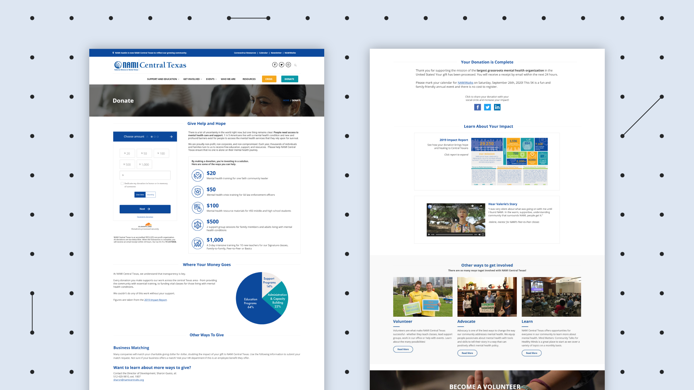
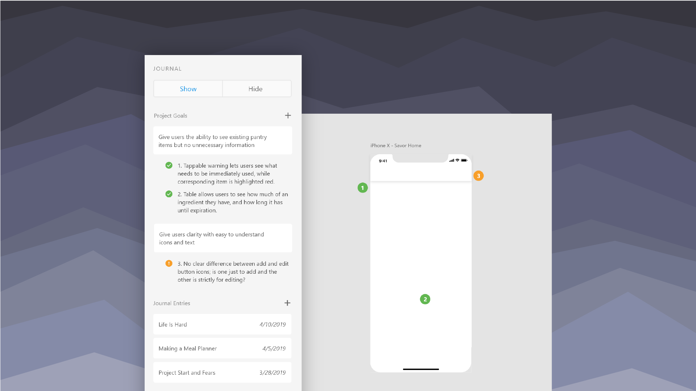
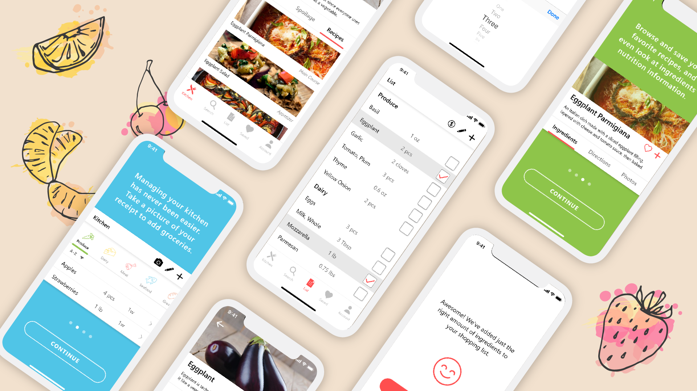

NAMI Central Texas
UX research and visual design for web
We transformed business metrics into qualitative user metrics to improve the donor experience for NAMI Central Texas.
View Case Study ›

Journal For XD
UX research and data anlysis for desktop
I designed a research study for a journaling plugin concept, learning the value of concept validation and qualitative data in design.
View Case Study ›

Savor: Meal Planner
UX/UI for mobile
I tackled the broad problem of food waste by identifying relevant user problems and narrowing the scope to solvable and actionable issues.
View Case Study ›
